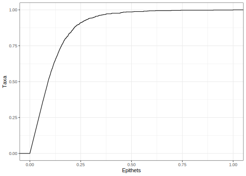

| Specific Epithet | Count |
|---|---|
| gracilis | 4346 |
| elegans | 3920 |
| australis | 3226 |
| bicolor | 3023 |
| minor | 2685 |
| affinis | 2548 |
| similis | 2508 |
| orientalis | 2432 |
| simplex | 2428 |
| intermedia | 2224 |
A Short Survey of Wikidata’s Specific Epithets
Adriano Rutz ![]()
James Hare
Abstract
This short article illustrates the content of Wikidata’s taxon names.
Keywords
Wikidata, Taxa, Names
1 Introduction
The query (https://w.wiki/5UJq) was performed on 2022-07-18 and returned 2,887,803 rows. Results are available on Zenodo (https://doi.org/10.5281/zenodo.6873162).
2 Results
There were 2,887,244 unique ids and 2,887,216 unique binomial names.
In total, there were 627,105 specific epithets. The most used was gracilis, with 4,346 occurrences.
An overview of the ten most used epithets is presented in Table 1:
Together, they account for 1.02% of all taxon names.
There were 393,291 (62.72%) specific epithets used only once.
The longest epithet was llanfairpwllgwyngyllgogerychwyrndrobwllllantysiliogogogochensis. It corresponds to http://www.wikidata.org/entity/Q100717800.
3 Illustrations
A cumulative frequency curve is presented in Figure 1:

Citation
BibTeX citation:
@online{rutz,
author = {Rutz, Adriano and Hare, James},
title = {A {Short} {Survey} of {Wikidata’s} {Specific} {Epithets}},
url = {https://adafede.github.io/wd-taxon-names/index.html},
langid = {en},
abstract = {This short article illustrates the content of Wikidata’s
taxon names.}
}
For attribution, please cite this work as:
Rutz, Adriano, and James Hare. n.d. “A Short Survey of Wikidata’s
Specific Epithets.” https://adafede.github.io/wd-taxon-names/index.html.